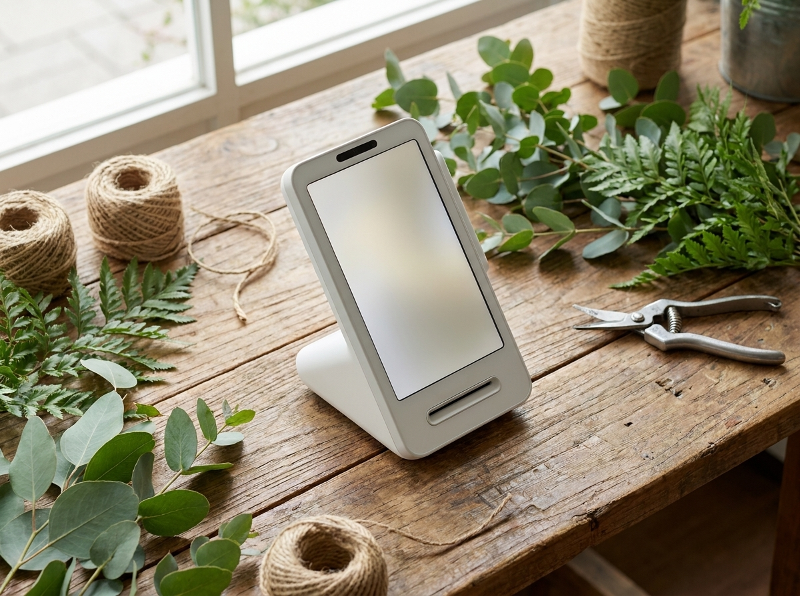

쓰던 카드단말기 바꾸고 싶을 때, 위약금부터 확인하는 순서
결론부터 말씀드리면, 단말기 교체는 새 기기를 고르는 일보다 기존 계약을 정리하는 일이 먼저입니다. 지금 쓰는 단말기에 약정이 남아 있는지, 중도에 해지하면 부담이 생기는지, 기기를 반납해야 하는지. 이 세 가지만 확인하고 나면 나머지 과정은 생각보다 단순합니다. 다만 약정 기간과 해지 조건은 계약마다 다르기 때문에, 기존 계약서와 해당 VAN사·대리점에 직접 확인하시는 것이 첫 단계입니다. 이 글에서는 교체 전 확인 순서, 영업을 멈추지 않고 넘어가는 방법, 그리고 1인 매장이 토스단말기로 갈아탈 때 실제로 달라지는 점을 정리했습니다.
단말기를 바꾸고 싶어지는 순간은 대개 비슷합니다
사장님들이 교체를 떠올리는 계기는 몇 가지로 모입니다. 가장 흔한 것은 속도입니다. 카드를 꽂고 승인이 뜰 때까지 시간이 길어지면, 손님 앞에서 "잠시만요"를 반복하게 됩니다. 혼자 매장을 보는 곳일수록 이 몇 초가 길게 느껴집니다.
두 번째는 오류입니다. 영수증 용지가 자주 걸리거나, 통신이 끊겨 재시도해야 하는 일이 잦아지면 결제 한 건마다 신경이 쓰입니다. 기기 자체가 오래되어 부품이 지친 경우도 있고, 매장 통신 환경이 바뀌면서 생기는 문제도 있습니다.
세 번째는 사후 관리입니다. 설치해 준 곳에 전화를 걸었는데 연결이 되지 않거나, 담당자가 바뀌어 매번 처음부터 설명해야 하는 상황이 반복되면 신뢰가 흔들립니다. 결제가 멈춘 순간에 누구에게 연락해야 하는지 분명하지 않다는 것, 그 자체가 매장 운영의 위험 요소입니다.
네 번째는 매장 변화입니다. 자리를 옮기거나 업종을 바꾸거나, 간편결제 수단을 늘리고 싶을 때도 교체를 검토하게 됩니다. 이유가 무엇이든 순서는 같습니다. 새 기기를 보기 전에 지금 계약을 먼저 펼쳐 보는 것입니다.
바꾸기 전 반드시 확인할 것 — 약정, 승계, 반납
교체를 결심했다면 아래 항목을 하나씩 확인해 보시길 권합니다. 항목별로 확인처가 다르기 때문에, 표로 정리해 두면 전화 한 번에 필요한 내용을 모두 물어볼 수 있습니다.
| 확인 항목 | 어디서 확인하나요 | 왜 중요한가요 |
|---|---|---|
| 기존 약정 기간과 잔여 개월 | 계약서, 기존 대리점, 해당 VAN사 | 해지 시점을 정하는 기준이 됩니다 |
| 중도 해지 시 부담 여부 | 계약서 조항, 해당 VAN사 문의 | 조건이 계약마다 달라 확인이 필요합니다 |
| 가맹점 정보 승계 여부 | 기존 VAN사, 카드사 | 가맹점번호 유지 여부에 따라 절차가 달라집니다 |
| 기존 기기 반납 조건 | 계약서, 기존 대리점 | 반납 방법과 기한을 미리 정해야 합니다 |
| 연동된 부가 서비스 | 포스, 배달앱, 정산 프로그램 | 교체 후 재설정이 필요할 수 있습니다 |
여기서 가장 많이 놓치는 항목이 세 번째와 네 번째입니다. 카드사 가맹점 정보는 매장 사업자에게 귀속되지만, 단말기를 바꿀 때 어떤 절차로 정리되는지는 계약 형태에 따라 다릅니다. 기존 기기 역시 임대인지 구매인지에 따라 반납 여부가 갈립니다. 임대 기기를 반납하지 않으면 나중에 별도 청구가 발생할 수 있으니, 회수 방법과 기한을 문서로 남겨 두시는 것이 안전합니다.
한 가지 더 말씀드리면, 해지 조건을 확인할 때는 기존 대리점 한 곳의 설명만 듣기보다 계약서 원문과 해당 VAN사 고객센터를 함께 확인하시는 편이 정확합니다. 계약 시점, 기기 형태, 부가 서비스 가입 여부에 따라 적용되는 조항이 달라지기 때문입니다.

영업을 멈추지 않고 갈아타는 방법
교체할 때 사장님들이 가장 걱정하는 부분은 "그날 장사는 어떡하냐"입니다. 실제로는 순서만 지키면 결제가 비는 시간을 짧게 줄일 수 있습니다.
먼저 신규 단말기 신청과 가맹점 심사를 미리 진행합니다. 이 절차가 끝나야 새 기기에서 결제가 열리기 때문에, 기존 계약 해지는 그 이후에 처리하는 것이 순서입니다. 다음으로 설치 일정을 한산한 시간대로 잡습니다. 오픈 직전이나 브레이크 타임처럼 손님이 적은 시간에 작업하면 부담이 적습니다.
설치 당일에는 새 기기에서 실제 결제와 취소를 한 번씩 테스트해 본 뒤, 기존 기기를 내리는 것이 좋습니다. 두 기기가 잠시 겹쳐 있는 구간을 두면 예기치 못한 상황에도 결제를 이어갈 수 있습니다. 마지막으로 기존 기기 반납과 계약 해지를 마무리하고, 포스나 배달앱 같은 연동 항목이 정상 작동하는지 확인하면 교체가 끝납니다.
1인 매장이라면 이 과정을 혼자 감당해야 한다는 점이 부담입니다. 그래서 설치와 관리를 누가 맡느냐가 기기 사양보다 중요해집니다. 토스단말기는 이 지점에서 1인 매장에 잘 맞는 선택지입니다. 월 0원·약정 없음으로 시작할 수 있어 계약에 길게 묶이는 부담이 적고, 화면이 직관적이라 혼자 계산대를 보는 매장에서도 익히기 쉽습니다. IC 카드 삽입 결제는 물론 삼성페이·네이버페이·카카오페이 같은 간편결제도 한 대에서 처리됩니다.
누리네트웍스는 수도권을 직접 방문해 설치·관리하는 결제 단말 전문 업체입니다. 교체 상담부터 기존 계약 확인 안내, 설치, 이후 점검까지 담당자가 이어서 맡기 때문에 연락처가 분명합니다. 정품 신제품 보증을 원칙으로 하며, 정확한 조건은 매장 구성과 기존 계약에 따라 달라지므로 상담 시 안내해 드립니다.
자주 묻는 질문(FAQ)
Q. 약정이 남아 있으면 지금은 못 바꾸나요?
바꾸실 수는 있습니다. 다만 남은 기간에 따라 해지 조건이 달라질 수 있으니, 기존 계약서와 해당 VAN사·대리점에 잔여 기간과 해지 조건을 먼저 확인해 보시길 권합니다. 조건을 알고 나면 지금 바꿀지, 만기에 맞춰 바꿀지 판단이 쉬워집니다.
Q. 단말기를 바꾸면 카드사 가맹점번호도 새로 받아야 하나요?
계약 형태와 VAN사에 따라 다릅니다. 기존 정보를 이어 쓰는 경우도 있고, 신규로 진행하는 경우도 있습니다. 사업자등록증과 기존 계약 내용을 확인하면 어느 쪽인지 알 수 있으니, 상담 시 함께 확인해 드립니다.
Q. 쓰던 기기는 어떻게 처리하나요?
임대 기기라면 반납이 필요하고, 구매 기기라면 보관하거나 예비용으로 두시기도 합니다. 반납 방법과 기한은 기존 대리점 안내를 따르시고, 회수 확인을 문서나 메시지로 남겨 두시는 것을 권합니다.
Q. 교체하는 날 결제가 아예 안 되는 시간이 생기나요?
신규 개통을 먼저 마치고 기존 기기를 나중에 내리는 순서로 진행하면 공백을 짧게 줄일 수 있습니다. 설치 시간대도 손님이 적은 시간으로 맞춰 드립니다.
우리 매장 상황부터 같이 확인해 보시죠
단말기 교체는 기기를 고르는 일이 아니라 계약을 정리하는 일에서 시작합니다. 약정과 해지 조건, 가맹점 정보, 기존 기기 반납. 이 세 가지를 확인해 두면 나머지는 순서대로 흘러갑니다. 9,400여 곳의 계약을 함께해 온 누리네트웍스가 수도권 직영 설치·관리로 그 과정을 함께 정리해 드리겠습니다. 지금 쓰는 단말기 상태와 계약 시기만 알려주셔도 어떤 순서로 진행하면 좋을지 안내해 드리니, 부담 없이 문의 주세요.
- 📞 전화상담 1544-7754
- 🌐 홈페이지 nwpos.co.kr
- 📷 인스타그램 instagram.com/nurinetworkspos
- ▶️ 유튜브 youtube.com/@nurinetworks